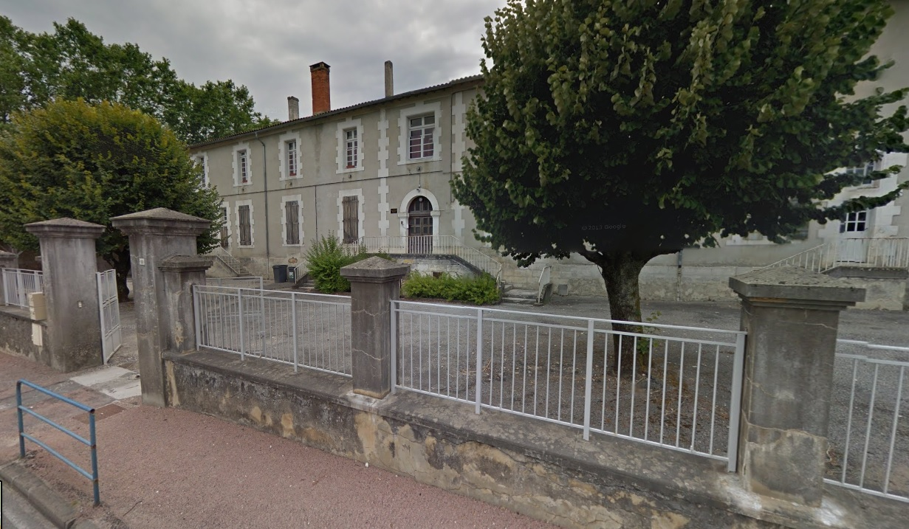
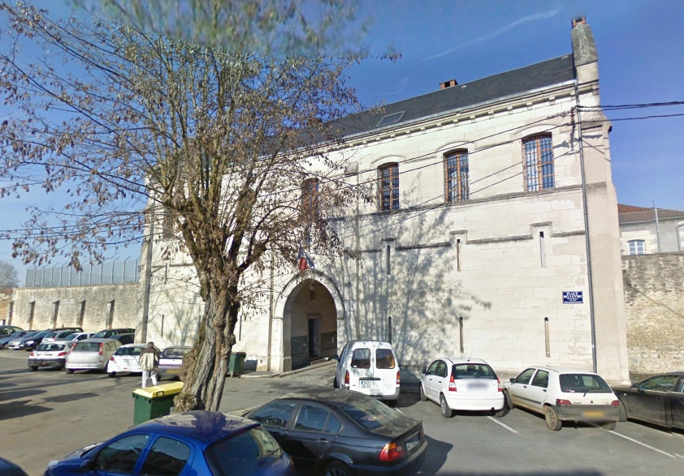
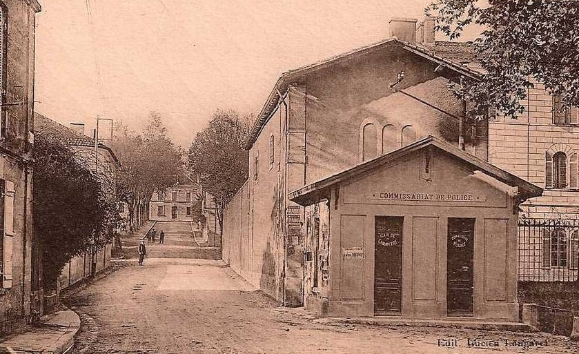

| Département | Images | Ville | Nom | Adresse | Période | Capacité | Histoire du lieu | Nombre d'exécutions |
| Dordogne (24) | Bergerac | Maison d'arrêt et de correction | Boulevard Chanzy | -1926 | Faisait face à la caserne Chanzy. | Aucune exécution | ||
| Dordogne (24) |  |
Nontron | Maison d'arrêt et de correction | 32, avenue Gambetta | -1926 | Devenue prison militaire entre 1940 et 1946. Devenue désormais école primaire. | Aucune exécution | |
| Dordogne (24) |  |
Périgueux | Maison d'arrêt, de justice et de correction | 2, place Beleyme | En service depuis 1863 | 115 places (1962) 91 places (2015) |
Rénovée entre 1990 et 1993. | Trois exécutions en 1889, 1928 et 1930 |
| Dordogne (24) |  |
Ribérac | Maison d'arrêt et de correction | Avenue des Écoles (angle de l'avenue de Verdun et de la place du général de Gaulle) | -1926 | Construite en même temps que le Palais de justice et l'ancienne gendarmerie, dont elle est voisine. | Aucune exécution | |
| Dordogne (24) | Sarlat-la-Canéda | Maison d'arrêt, de justice et de correction Notre-Dame | 6, place Salvador Allende | 1813-1887 | Construit en 1671 après la destruction du premier couvent fondé en 1637, le couvent Notre-Dame se développe grâce à l'évêque François de la Mothe-Fenelon. Ayant une vocation de pensionnat (et la volonté de préserver les élèves du protestantisme), la bâtisse est vendue comme bien national. En 1813, on y installe dans les ailes opposées gendarmerie nationale et maison d'arrêt. En 1839, l'aile servant autrefois d'internat pour jeunes filles est acheté par le conseil général, et deux ans plus tard, la sous-préfecture quitte l'ancien Présidial pour s'installer à son tour dans le couvent - et s'y trouve encore, en 2017. Peu adaptée malgré tout à un usage carcéral, le couvent sera déserté en 1887 après la construction d'une prison cellulaire au Sud de la ville. Le bâtiment de la gendarmerie est inscrit quant à lui aux monuments historiques en 1949. | Aucune exécution | ||
| Dordogne (24) | Sarlat-la-Canéda | Maison d'arrêt, de justice et de correction du "Mas" | "Le Mas", rue Gabriel Tarde | 1887-1926 | La dernière prison de Sarlat n'eut qu'une vie réduite, malgré sa modernité : construite sur un terrain de 84 ares sous l'égide de l'architecte Lagrange, elle était en effet une prison cellulaire moderne, et de loin l'établissement pénitentiaire le plus vaste du département. Cependant, son statut de prison de sous-préfecture lui valut d'être fermée en 1926, moins de quarante ans après sa mise en service. Les autorités locales, peu prévoyantes, firent raser presque immédiatement la maison d'arrêt pour y construire le collège La Boétie et l'école pratique d'artisanat rural. Cela posa problème dès 1930, avec la ré-ouverture du tribunal : faute de disposer d'assez d'argent pour une reconstruction, les inculpés dont le cas était instruit à Sarlat devaient être enfermés à Périgueux, à 70 km de là ! | Aucune exécution |
{kind=link}
{kind=link}
{kind=link}